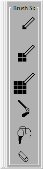
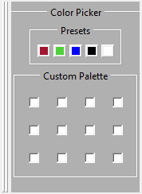

Pixel Image Editor
Thank you for using our Pixel Image Editor! Click the links below to jump to specific topics or scroll down to learn more about P.I.E.!
Contents
Startup
The Basics
The Canvas
The Brush Panel
The Color Panel
The Layer Panel
The Toolbar
Startup
After the program launches, you will see the following screen:

Click the center button to open a new file. Or, click the new file icon on the toolbar to open a new file. Regardless, you will then see the main screen:

Now you can draw whatever you want!
The Basics
This program can be used to edit an image pixel by pixel or draw more freely. You can customize the position of each panel in the editor by clicking and dragging from the left side of each box. They can be snapped back into place around the screen, or they can float freely on the side- whatever you choose. From the main screen you can choose from a variety of colors and brushes. Choosing custom colors from the Color Panel allows for even more flexibility and expression. You can erase anything you draw by clicking the eraser button. Try playing around with colors and different types of brushes!
The Canvas
The canvas is the part of the program that can be drawn on. After selecting your color and brush size, click and drag on the canvas to draw or click once and release to draw a single pixel.

The canvas is shown above and is initially filled completely white. Below is an example of the kind of masterpieces you can create!
If you resize the program you can hide the canvas, but don't worry it won't erase any of your work!
The Brush Panel
There are three different brush sizes to choose from, 1x1, 2x2, and 3x3.

Click on one of the buttons to select your brush size.
1x1 Brush
 2x2 Brush
2x2 Brush
 3x3 Brush
3x3 Brush
The full brush panel (pictured below) also contains a fancy brush, a fill pail, and an eraser.
The fancy brush draws with a diagonal dimension. The fill pail fills the entire screen a solid color. And the eraser is a larger brush, which only colors white. Below is an example of the fancy brush in different colors.
Brush demonstrations are shown below.

The Color Panel
The color panel is to the right of the canvas

Five colors are pre-set for you to choose from, and the color palette is empty until you assign colors to it. Click on a box in the Custom Palette section to choose a new color!

Clicking a blank box in the Custom Palette section opens up a new window where you can choose from many different colors. These options are shown below.
.png)
.png)
.png)
.png)
.png)
The Layer Panel
The Layer Panel is located at the bottom right of the screen. Use this panel to add or remove layers from your project.

Hide a layer by clicking the H button and select a layer by clicking the S button. Clicking C will clear the contents of the layer.
The Toolbar
The toolbar is located at the top of the screen.
1 - The PIE button
Click this button to access your "New," "Load," "Save," "GitHub," and "Exit" options! The "GitHub" option redirects you to our GitHub page!
2 - New Project
Click this button to create a new PIE project!
3 - Save as PIE file
Click this button to save your image as a PIE file! (This will keep your layers and color options saved)
4 - Export as PNG
Click this button to save your file in PNG format!
5 - Open a PIE Project
Click this button to open one of your previously saved PIE projects!
6 - About
Click this button to navigate to this page! <3